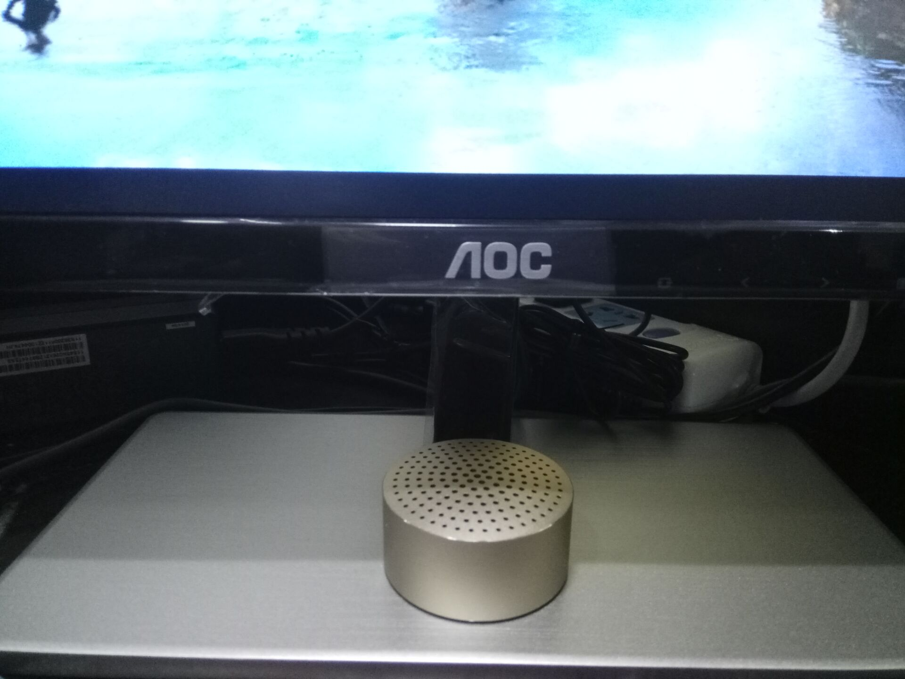

显示器排行榜
2017-3-11 11:56:42 by 郭某某
最近入手一台显示器
AOC
I2279VWHE
优点：
1.屏幕清晰，色彩鲜艳，对比度高。色准色温是可以调的，出厂默认是暖色，调成标准模式就很好了。偏暖屏，个人很喜欢，柔和不刺眼。
2.不闪屏，用手机和筷子低亮度检测皆为不闪屏，看介绍用的应该是LG的技术，看久了眼镜不会疲劳，对保护视力很有用，但由此带来的缺点就是亮度调节范围较小，晚上使用需要开灯。
3.外观不错，实际边框依旧很窄，屏幕也很薄，金属底座也很稳。
缺点：
1.做工差，边框与屏幕缝隙较大，指甲可以轻松插入，并且屏幕固定不牢，屏幕左右下角按压发现可以活动！显示器固定牢之后可以左右晃动！屏幕有黑边我可以忍，但是为了宣传噱头设计窄边框且做工又跟不上实在是得不偿失，优秀的工业设计是要以做工精良为基础的，如果做不到后者宁愿选择朴实的设计优先保证质量（参见小米，双飞燕），这点希望厂家重视，再好的产品做工差也会让人像吃了苍蝇一样难受！
2.有一个坏点，这个倒是可以接受，国家规定三个以下就行，我的还是在边缘所以没太大关系，只是希望AOC在出货量如此之大的同时加强品控，不要让坏点成为常态。
3.没有附赠HDMI线，如果有的话会加分不少。但是我在京东买的，京东送了HDMI线。
总结：
总体来说是一款不错的屏幕，屏幕素质达到了很高的水准，只是做工有待加强。

显示器十大品牌排行榜
数据参考 慢慢买 2017-3-13 20:49:34
| 显示器 | 品牌 | 30天全网销量 | 推荐购买(☆x100) |
|---|---|---|---|
| AOC显示器 | 冠捷 | 3841448件 | ☆x90 |
| 三星显示器 | SAMSUNG/三星 | 838748件 | ☆x90 |
| 戴尔显示器 | DELL/戴尔 | 569418件 | ☆x92 |
| 飞利浦显示器 | PHILIPS/飞利浦 | 548890件 | ☆x90 |
| LG显示器 | LG | 134924件 | ☆x92 |
| 华硕显示器 | ASUS/华硕 | 97986件 | ☆x90 |
| 优派显示器 | ViewSonic/优派 | 1994318件 | ☆x88 |
| 宏碁显示器 | acer/宏碁 | 117288件 | ☆x90 |
| 明基显示器 | BenQ/明基 | 413172件 | ☆x90 |
| 惠科显示器 | HKC/惠科 | 291572件 | ☆x88 |
以上数据参考慢慢买鸣谢！